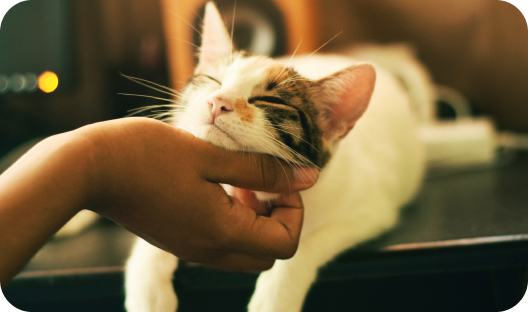

-

Cats and their amazing skills: from hunting to mysterious abilities
-

Cats in literature and art: from Egyptian gods to contemporary masters
-

Cat breeds for active owners: how to choose a companion
-

Fun facts about cats that will surprise you
Fun and interesting facts about cats that will cheer you up and tell you about their uniqueness.
-

The most popular cat breeds: which cat is right for you?
Learn about the most popular cat breeds and their characteristics to make an informed choice that's right for you.
-

How to take care of your furry friend: cat care
Learn about the main aspects of cat care, including feeding, hygiene, and interacting with your cat.
-

History and cultural significance of cats around the world
Explore how cats have influenced the cultures of different nations and learn the history of how humans and cats have lived together.


Video with Fluffy